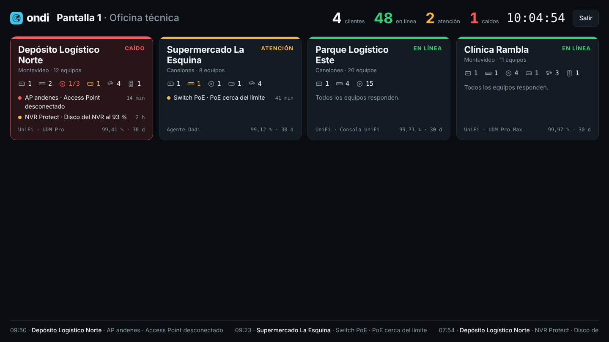
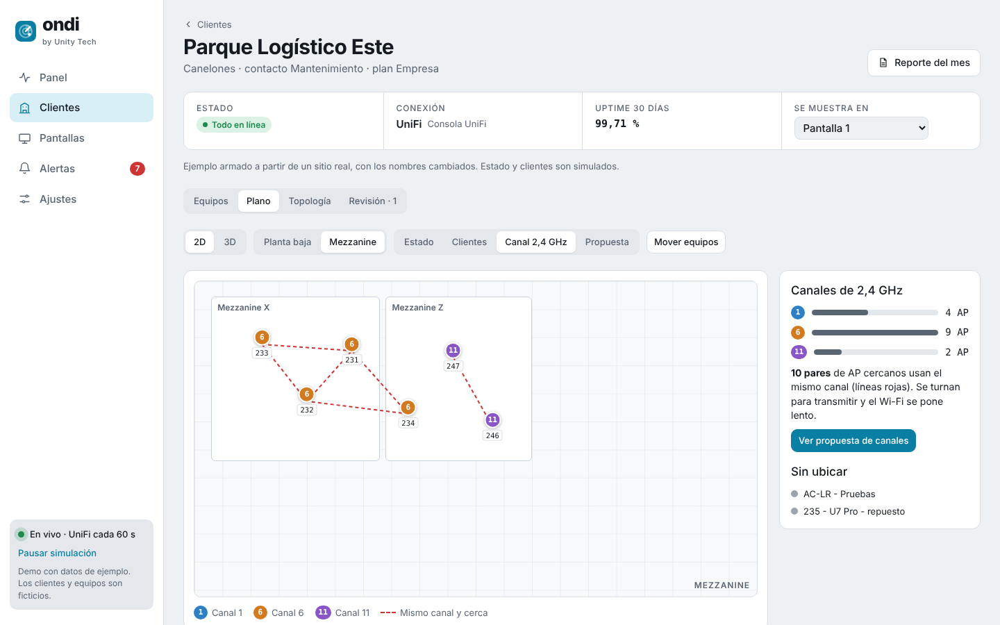

Chrome, Safari o Edge, sin instalar nada. Para el televisor de la oficina, unitytech.uy/ondi/app/#pantalla-p1 abre directo el modo pantalla.
Monitoreo de redes · hecho en Uruguay
Enterate de la caída
antes que tu cliente.
Ondi vigila las cámaras, switches, access points y porteros de todos tus clientes. Si algo se cae, lo ves en la pantalla de la oficina o te llega un WhatsApp, con el ticket ya abierto.
UniFi sin instalar nadaMultimarca con agenteiPhone, Android, Windows, Mac y navegador

Lo que la consola no te muestra.
La consola de Ubiquiti te dice qué está online. Ondi te dice qué hacer, para todos tus clientes juntos.
Pantallas
Un monitor para la oficina
Elegís qué clientes ve cada pantalla. Los que tienen problemas pasan primero y la tarjeta se pone roja.
Avisos
WhatsApp con escalamiento
Los clientes fuera de pantalla avisan al técnico de guardia. Si nadie responde en 10 minutos, avisa al siguiente.
Causa raíz
Una alerta, no veinte
Si se cae un switch, llega una sola alerta y lo que cuelga de él queda marcado «sin acceso».
Plano 2D y 3D
Los equipos donde están
Subís el plano, ubicás cada equipo y ves el estado por zona y por piso.
Canales
Qué AP se pisan
Marca los access points cercanos que comparten canal y propone una combinación mejor de 1, 6 y 11.
Reportes
Un informe para cada cliente, cada mes.
La disponibilidad de sus equipos en una página que justifica el abono.
99,8 %disponibilidad del mes · ejemplo
Caso real
Un plano que encuentra problemas.
En una red real de 51 equipos, 9 de 15 access points estaban en el mismo canal de 2,4 GHz. Nadie lo había notado porque todos figuraban «online».
- Líneas rojas entre los AP cercanos que se pisan.
- Propuesta de canales que cambia la menor cantidad de equipos.
- Los repuestos y equipos de prueba no generan alertas.

Solo con la consola UniFi
- Un sitio a la vez
- Alertas por mail o push, sin escalamiento
- Una alerta por cada equipo desconectado
- Los repuestos figuran offline para siempre
- Sin plano ni análisis de canales
Con Ondi
- Todos tus clientes en una pantalla
- WhatsApp al técnico y escalamiento automático
- Una alerta por la causa, no por cada síntoma
- Repuestos marcados, sin falsas alarmas
- Plano 2D/3D, mapa de canales y revisión de la red
En la oficina, en la calle y en la tele.
Todas las versiones abren la misma app y se actualizan solas. Por ahora muestra datos de ejemplo mientras conectamos los primeros clientes.
Descargá el ZIP, descomprimilo (por ejemplo en Documentos\Ondi) y abrí Ondi.exe. Windows 10 u 11, 64 bits.
--pantalla=p1.Descargá el ZIP, abrilo y hacé doble clic en Instalar Ondi. Queda en Aplicaciones.
Pronto en TestFlight. Mientras tanto: abrí unitytech.uy/ondi/app en Safari y tocá Compartir → «Agregar a inicio».
Pronto en Google Play. Mientras tanto: abrí unitytech.uy/ondi/app en Chrome → menú ⋮ → «Instalar aplicación».
La web y las apps de escritorio abren siempre la última versión: se actualizan solas.
Planes.
Precio por cliente monitoreado, por mes. Valores de lanzamiento, a confirmar.
Básico
USD 10 / mes
Hasta 15 equipos.
- Avisos por WhatsApp
- Estado en tiempo real
Recomendado
Pro
USD 20 / mes
Hasta 40 equipos.
- Todo lo de Básico
- Pantalla para la oficina
- Reporte mensual
- Plano 2D y 3D
Empresa
USD 40 / mes
Sin límite de equipos.
- Todo lo de Pro
- Portal del cliente
- Escalamiento de avisos
Ondi hace monitoreo técnico del estado de los equipos. No es un servicio de vigilancia ni de seguridad.
Probala con tus clientes.
Te conectamos tus sitios UniFi con una clave de solo lectura, sin instalar nada en cada cliente.